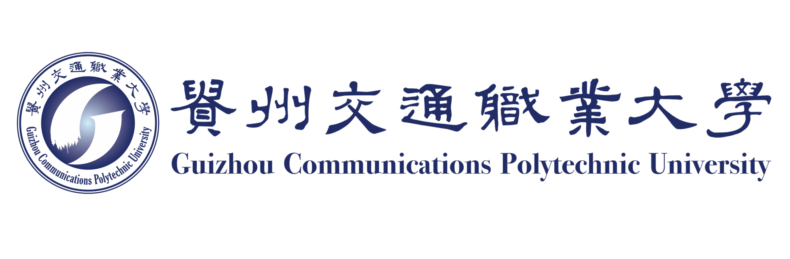
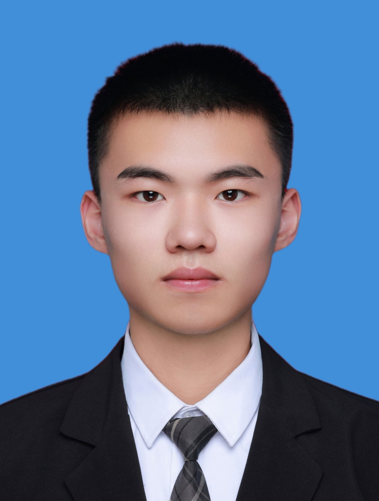

个人概况
| 姓名：穆虹辰 | 性别：男 |
| 出生年月：2006年** | 政治面貌：共青团员 |
| 联系电话：157****9293 | 邮箱：hcm***st@outlook.com |
| 求职意向：软件测试工程师 | 技术支持 |
教育背景
- 学校：贵州交通职业大学（2025年9月 - 2028年5月）
- 专业：计算机网络技术（职业本科）
- 主修课程：计算机网络基础、Python程序设计、Web前端开发、数据库原理与应用、软件测试与质量保证、物联网系统设计、Linux系统与网络管理、项目管理与实训
- 成绩排名：专业前15%
- 荣誉：国家励志奖学金、全国大学生数学竞赛三等奖、粤港澳机器人大赛一等奖
项目与实践经历
- 智慧自习室系统（2025年3月）
校园创新项目，负责系统建模与考勤逻辑实现。基于Python与MQTT协议实现实时数据同步与可视化展示。 - 虚拟机器人编程任务挑战（2025年11月）
使用Python编写自动任务执行逻辑与路径规划算法，优化机器人运行效率约30%，在省级比赛中表现优异。
实习与校园经历
- 厦门天马微电子有限公司（2025年2月 - 2025年9月）
担任操机员，参与机台调试与设备报警处理，学习生产流程与质量标准，积累现场协调与问题解决能力。
专业技能
- 编程语言：熟悉 HTML、C/C++；了解 Python、JavaScript
- 框架与工具：Arduino IDE、Flask、Vue.js、Mind+
- 软件平台：VS Code、Git、Navicat、Postman、Proteus
- 语言能力：英语四级，普通话一级甲等，高级CV工程师
- 软技能：团队协作、硬件调试、技术文档撰写、竞赛展示与汇报
自我评价
作为计算机网络技术专业学生，我具备扎实的软硬件编程基础与丰富的项目实践经验。 多次参加编程与创新比赛，培养了系统调试、测试优化及技术汇报能力。 我具有良好的学习能力与逻辑思维，未来希望在软件测试或技术支持岗位中继续深耕， 将实践经验转化为更高的工程质量与用户体验。